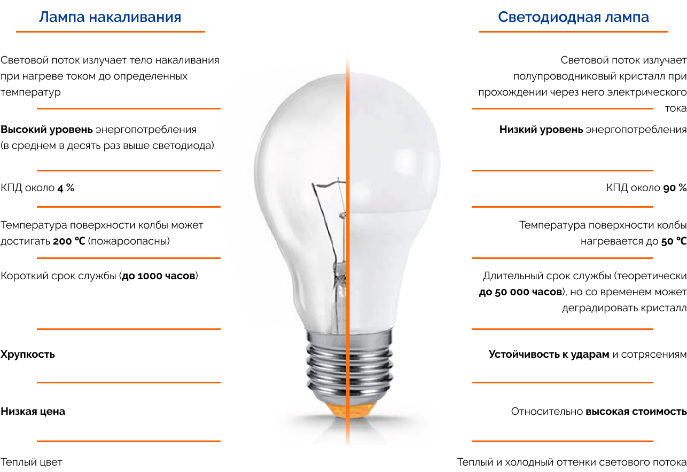

В 2009 году Правительство РФ запретило продажу на территории страны ламп накаливания мощностью более 100 Вт, взяв курс на повышение оборота энергоэффективных источников света. Из обломков копий, сломанных в спорах о преимуществах и недостатках LED и ламп накаливания, можно восстановить Великую Китайскую стену (которая, кстати, задержит поток малонадежных осветительных приборов). Конечному потребителю не слишком интересно, чем отличается светодиод от лампочки, – ему важнее сравнить стоимость и долговечность, приведя к разумному показателю соотношение цена/качество. Посмотрим, на что ориентироваться при выборе.
Итак, под плафонами и абажурами наших люстр и торшеров прижились три типа ламп: накаливания, люминесцентная и светодиодная.
Это так называемые лампы общего назначения. Специальное предполагает применение тех же технологий в разного рода приборах для индикации или создания светового пучка. Принцип действия остается неизменным, а вот технические характеристики варьируются весьма широко.
Это, к примеру, светодиод, который устанавливается в обычную бытовую технику для индикации процессов.
А это – лампа накаливания, используемая в габаритных огнях автомобилей.
Обычная лампочка накаливания, повсеместное распространение которой ввел указами еще Владимир Ильич, состоит в общем случае из стеклянной колбы, тела накала (преимущественно из вольфрама) и токовводов с предохранителем. При замыкании электрической цепи (включении) ток проходит через тело накала, нагревая его до определенной температуры, и оно начинает излучать видимый свет широкого спектра. Чтобы избежать окисления металла, колбу заполняют инертным газом или создают в ней вакуум.
В основе работы светодиода лежат свойства полупроводникового материала, из которого он изготовлен. Пропуская электрический ток через кристалл, мы получаем оптическое излучение узкого спектра – видимый свет определенного цвета. Для получения белого светодиода используются три кристалла, дающих красное, синее и зеленое свечение, в одном корпусе.
Самое значимое для потребителя отличие светодиода от лампочки накаливания – он всегда будет энергоэффективнее, вне зависимости от назначения и области применения. При переходе на экономичные осветительные приборы показатели не единожды измерялись, результаты публиковались, и теперь известно:
Как видим, экономия энергии значительная, и это самое главное преимущество светодиода.
Кроме того, LED-диоды выделяют мало тепла: их КПД близок к 90 %, и они преобразуют практически всю полученную энергию в световой поток. Лампа накаливания в среднем имеет КПД около 4 %, а остальное уходит в нагрев поверхности. Светодиодные лампы пожаробезопасны – температура их колб не поднимается выше 50 ℃. Альтернатива в 4 раза горячее.
В силу особенностей конструкции светодиоды – вещь довольно прочная, так что сотрясение или удар не влияет на их работу. Нить накала в обычных лампочках рвется при незначительном воздействии. Срок службы в благоприятных условиях определяется в 1000 часов, и все мы помним запасы в глубине шкафа. LED-лампы теоретически способны проработать 50 000 часов, однако производители гарантий на такой срок, конечно, не дают. Кристалл перегореть не может, но зачастую со временем деградирует, из-за чего яркость снижается.
Потребитель, который разобрался, в чем разница между светодиодом и лампочкой, в выборе сомневаться вроде бы не должен. Однако осветительные приборы с более чем столетней историей по-прежнему занимают немалую часть витрин магазинов. Преимущество в глазах многих у них одно, но решающее – цена. Стандартная лампочка с цоколем Е27 стоит около 20 рублей, тогда как светодиодная с тем же световым потоком – от 130. К тому же дешевые модели безымянных производителей часто бывают бракованными, а их технические характеристики – неточными: вместо заявленных 700 Lm вполне можно получить 500 Lm.
